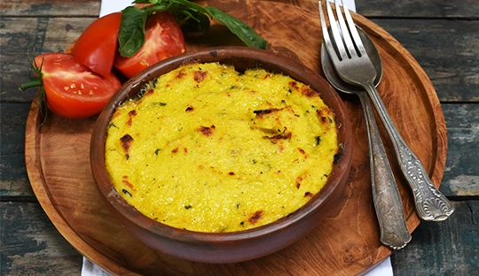
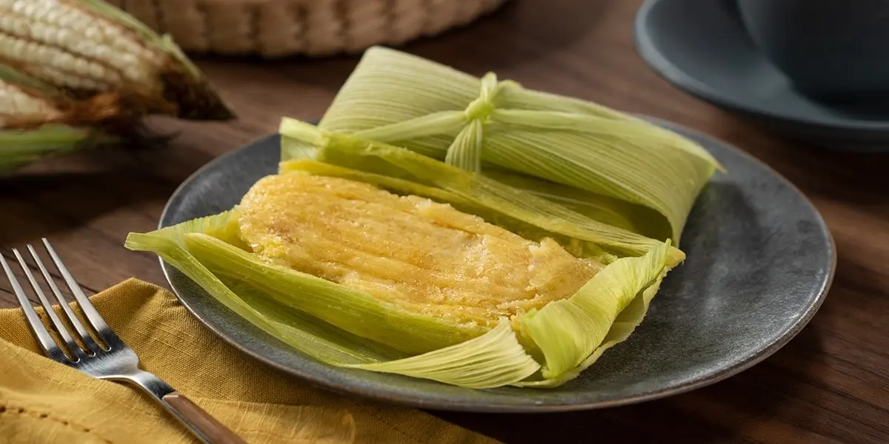

Pastel de Choclo
Preparado con carne, pollo y una capa dulce de choclo molido al horno.

Cazuela
Sopa tradicional con carne, papas, zapallo y verduras frescas.

Charquicán
Guiso preparado con papas, zapallo y carne desmenuzada.

Porotos Granados
Plato campesino con porotos frescos, zapallo y choclo.

Chancho en Piedra
Preparación tradicional chilena hecha con tomate, ajo, ají y pan amasado.

Humitas
Preparación de choclo molido envuelta en hojas de maíz y cocida.